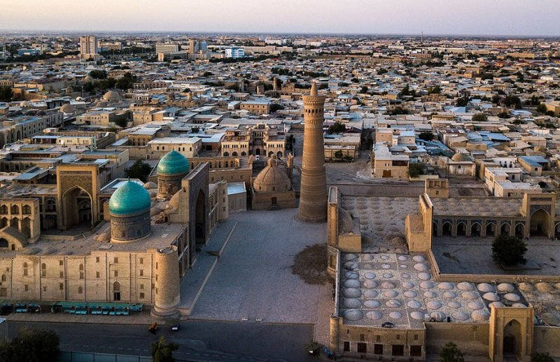

Новости

Россия сняла введенные из-за коронавируса ограничения на авиарейсы в Узбекистан
Россия на взаимной основе сняла введенные из-за
коронавируса ограничения на авиасообщение с Узбекистаном и
еще несколькими странами, сообщает корреспондент
Podrobno.uz со ссылкой на данные Росавиации.
Речь идет о полетах в Азербайджан, Армению, Казахстан,
Кыргызстан, Таджикистан, Туркменистан, Узбекистан и Иран.
Ограничения сняты с 9 марта, с этой даты разрешены как
нерегулярные, так и регулярные рейсы.
Напомним, что ранее Uzbekistan Airways опровергла слухи о
возможной приостановке авиасообщения с Россией. Только за
последние несколько дней отечественная авиакомпания
нарастила число рейсов в Новосибирск, Владивосток,
Санкт-Петербург, Казань и Москву.
Казахстанский лоукостер FlyArystan запускает регулярные рейсы между Самаркандом и Алматы
Казахстанский лоукостер FlyArystan открыл продажу билетов
на перелеты по новому направлению Самарканд-Алматы. С 30
марта регулярные рейсы будут осуществляться по средам и
субботам, длительность полета составит около двух часов,
сообщает корреспондент Podrobno.uz.
"Этой весной мы рады предложить узбекским путешественникам
прямые беспосадочные рейсы в Алматы. Запуск данного
направления позволит чаще летать на комфортабельных Airbus
A320 в Казахстан не только из Ташкента, но и из
Самарканда, и через Алматы попасть в любую точку
Казахстана", – отметил директор по планированию маршрутной
сети FlyArystan Ренат Абулханов.
По его словам, авиакомпания постоянно ищет новые
возможности расширения своей международной маршрутной сети
в города Узбекистана, так как между двумя странами
существует большой пассажиропоток, который продолжает
стремительно расти.
FlyArystan – первый лоукостер Казахстана и Евразии,
созданный в мае 2019 года. Самолеты перевозчика базируются
в Алматы, Нур-Султане, Актау, Атырау и Шымкенте. Во флоте
компании 10 самолетов Airbus A230 на 180 посадочных кресел
эконом класса. До конца 2022 года планируется пополнение
авиапарка еще 4 авиалайнерами.
Uzbekistan Airways получила второй самолет Airbus A321neo. Видео
Авиакомпания Uzbekistan Airways получила второй самолет
А321neo с увеличенной дальностью полета, сообщает
корреспондент Podrobno.uz.
Данное воздушное судно способно выполнять полёты с полной
загрузкой практически по всему Евразийскому континенту. К
примеру, для него доступны такие далекие от столицы
Узбекистана направления, как Лондон, Сеул и Куала-Лумпур.
Максимальный взлетный вес самолета – 97 тонн. Он может
перевозить 23 тысячи кг коммерческой загрузки. В салоне
самолета 188 пассажирских кресел, из которых 16 мест
бизнес-класса и 172 – в экономическом классе.
Uzbekistan Airways после долгого перерыва возобновляет еженедельные рейсы в Баку
Авиакомпания Uzbekistan Airways с 8 марта 2022 года после
долгого перерыва возобновляет еженедельные рейсы в Баку,
сообщает корреспондент Podrobno.uz.
Авиарейсы будут выполняться один раз в неделю – по
вторникам в период зимнего расписания по следующему
графику:
Ташкент – Баку (вылет в 14:40 – прилет в 16:35 (время
местное)